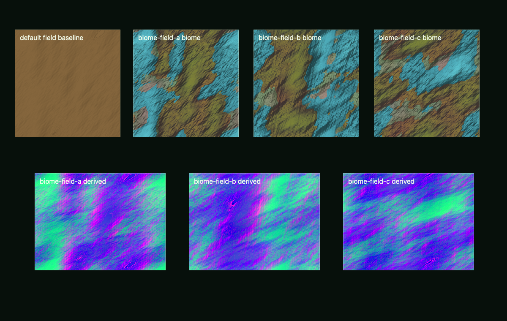
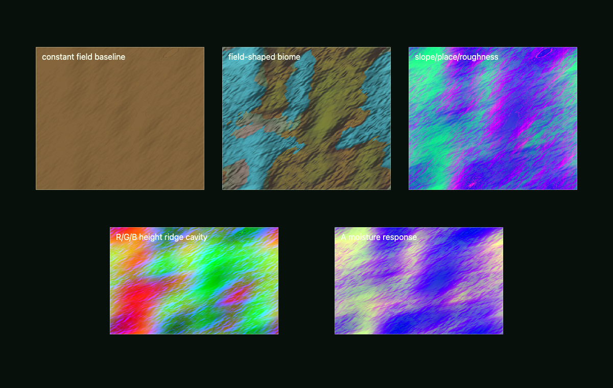
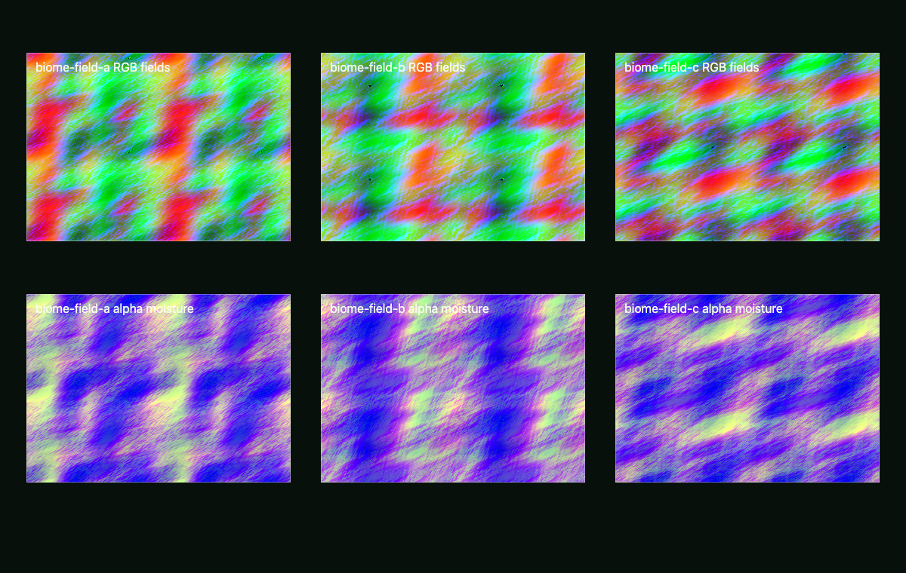

Primary implementation surface
These routes are generated from canonical source. Their exact status remains separate from implementation availability.
Build coherent WebGPU/TSL procedural scalar and vector fields for Three.js. Use for local terrain and archipelago support, metric coast distance and frames, coupled elevation and bathymetry, drainage/exposure and placement factors, NodeMaterials, compute bakes, storage textures, planets, wear, biomes, clouds, water masks, displacement, roughness, normals, domain warping, and visuals where many channels derive from shared causes.
These routes are generated from canonical source. Their exact status remains separate from implementation availability.
This skill contributes to the following cross-skill owner graphs.
A field is a pure function $F:\mathbb R^3 \to \mathbb R^m$ from position to a bundle of channels (height, moisture, wear, mask…). Everything derives from shared causes, so channels correlate the way nature does. The workhorse is fractal Brownian motion over a noise basis:
$$F(\mathbf p) = \sum_{i=0}^{O-1} a^i\, n\big(f^i \mathbf p + \mathbf o_i\big), \qquad a < 1,\; f \approx 2$$Domain warping feeds a field through itself to break up isotropy: $F'(\mathbf p) = F\big(\mathbf p + w\,\mathbf W(\mathbf p)\big)$. Derived surface data uses the gradient, e.g. slope masks $m = 1 - \hat{\mathbf n}\cdot\hat{\mathbf u}$ from
$$\nabla F \approx \frac{1}{2\epsilon}\big(F(\mathbf p + \epsilon\mathbf e_i) - F(\mathbf p - \epsilon\mathbf e_i)\big)_{i=1..3}$$The contract the skill enforces: the CPU and TSL implementations are the same function (same basis, same seeds, same remaps), validated by GPU readback diff $\max|F_{CPU}-F_{GPU}| < \varepsilon$ — placement and shading must agree on the world.
Every image identifies what it proves. Page screenshots demonstrate the published presentation only; generated inputs demonstrate asset channels only; canonical acceptance still requires render-target readback and a schema-v2 bundle.
4 published images



The complete SKILL.md as loaded by agents — verbatim, rendered.
The first implementation decision is the algorithm class. Do not begin with a
simple material expression and later optimize it. Author the field once as a
deterministic TSL Fn, reuse that exact function in material, vertex, and
compute stages, and bake only when an invocation-weighted ALU, update, and
bandwidth model predicts a win over direct evaluation.
Keep the shared field core stage-portable: coordinates, deterministic field,
analytic derivatives, and causal outputs only. Fragment footprint derivatives,
vertex patch-error policy, and compute tile invalidation are consumer adapters;
do not place dFdx/dFdy inside a function also called from vertex or compute.
Use $threejs-choose-skills before this skill when the request spans multiple
graphics systems. Use $threejs-procedural-materials when the task is channel
assembly and material response, and $threejs-procedural-planets when the
deliverable is a complete planetary body.
When a field participates in dynamics, collision, support, forcing, or another physics query, bind it to the route's
physics-domain and interaction contract.
The public boundary is a typed PhysicsSignalDescriptor, not a TSL function,
texture handle, or undocumented callback. It references the active
PhysicsContext through canonical contextId, physicsFrameId,
physicsOriginEpoch, transformRevision, clockId, channel/unit,
represented-footprint/filter, validity, perChannelError, cadence/latency,
stateVersion, residency, and resourceGeneration fields.
PhysicsSampleRequest.requestedPhysicsTime and
SampledChannel.actualPhysicsTime both use the canonical PhysicsTime
wrapper { kind, instant, interval }. Query semantics select kind: instant
or kind: interval; exactly that arm is present and the other arm is a
canonical TypedAbsence record. Do not retype either boundary as a raw
PhysicsInstant | PhysicsTimeInterval, add time to the descriptor, or create a
field-local timestamp dialect. Convert from
Three.js world coordinates exactly once through
PhysicsContext.worldToPhysicsTransform and its sole positive
metersPerWorldUnit; no field serializes the reciprocal or another scale.
Field math and storage stay domain-owned; cross-system consumers may read only
descriptors whose context, frame, version, and error gates pass. Publish
physics values in SI in a stable physical frame. A render rebase makes the
camera owner publish a new CameraViewPublication with a changed render
mapping and renderOriginEpoch; the view-independent candidate and physical
field state do not change
physicsFrameId, physicsOriginEpoch, values, IDs, or versions.
When a field classifies substrate or another physical material, its published
PhysicsMaterialId resolves to the route-owned PhysicsMaterialRegistry and
the exact registry/material-state versions used for the sampling interval.
The field supplies causal classification and uncertainty; the registry pair
resolver supplies contact, transport, thermal, or wetting laws. Render color,
roughness, and field masks never infer those laws or silently provide defaults.
Every numerical claim emitted from this skill carries one label:
Unlabelled integers in API names, vector widths, channel counts, or source code are structural, not budget claims.
Use the repository's pinned Three.js r185 WebGPU/TSL APIs:
WebGPURenderer from three/webgpu.three/tsl, with reusable Fn field functions.MeshStandardNodeMaterial, MeshPhysicalNodeMaterial, or the appropriate
NodeMaterial family member for material consumers.RenderPipeline, pass(), mrt(), PassNode.setResolutionScale(),
outputColorTransform, and renderOutput() for node post pipelines.renderer.compute() or renderer.computeAsync() with Fn().compute(count),
StorageTexture, textureStore(), StorageBufferAttribute,
StorageInstancedBufferAttribute, storage(), barriers, and atomics when the
field bake or placement algorithm needs them.After renderer initialization, prefer renderer.compute() for ordinary
submission. In r185 computeAsync() only initializes on demand before
enqueueing; it is not a GPU-completion fence. Await an actual readback/map or
use GPU timestamps when completion or timing evidence is required.
Runnable import baseline:
import {
RenderPipeline,
StorageBufferAttribute,
StorageInstancedBufferAttribute,
StorageTexture,
WebGPURenderer,
} from 'three/webgpu';
import {
Fn,
mrt,
pass,
renderOutput,
storageTexture,
textureStore,
} from 'three/tsl';
outputColorTransform is a RenderPipeline property, not a TSL export.
Initialize and reject any non-WebGPU backend before selecting quality. CPU ports remain offline/geometry/parity tools; they are not a runtime renderer branch.
await renderer.init();
if (renderer.backend.isWebGPUBackend !== true) {
throw new Error('threejs-procedural-fields requires a native WebGPU backend.');
}
const { features, limits } = renderer.backend.device;
Quality tiers:
| Tier | Use when | Field architecture |
|---|---|---|
full |
Measured full-resolution field plan is inside the target frame and memory budgets | TSL Fn is source of truth; use direct evaluation or compute-baked storage according to the cost model; retain required gradients and filtered mips. |
budgeted |
Measured full tier misses time or bandwidth | Same WebGPU graph with fewer active spectral bands, smaller/dirty-tiled bakes, lower update cadence, and packed access-local channels. |
minimum-native |
Gated WebGPU exists but the budgeted tier still misses | Same WebGPU consumer contract with precomputed generated data, coarser native-WebGPU textures, and only silhouette/identity-critical fields. |
These are presentation/storage tiers for purely visual fields. Changing the
representation, filter, active band, cadence, or error of a physics-facing
field requires a coordinator-admitted QualityTransition at a graph step
boundary, with an explicit conservative map or reset/handoff and one
authoritative producer throughout the transition.
Before code, write a field bundle:
coordinates
-> macro form
-> meso structure
-> derived causes
-> packed material and placement channels
Example:
sphereDirection
-> tangentially warped direction
-> elevation + ridges + craterDepth
-> slope + cavity + latitude + moisture
-> biome + color + roughness + bump + placementMask
The contract must record:
For every physics-facing output, emit its PhysicsSignalDescriptor and batched
adapter. Static fields publish an immutable stateVersion with
analytic-on-demand or event-driven cadence as appropriate; every request
and returned channel, including a static/analytic result, carries canonical
requestedPhysicsTime or actualPhysicsTime as a PhysicsTime wrapper with
one active semantic arm and one TypedAbsence arm. Edited or simulated fields
additionally publish their cadence, latency, and invalidation state. Missing,
stale, ambiguous, or out-of-domain samples remain explicit validity states.
Optional channels that do not exist remain absent. Never substitute zero,
reuse an old origin epoch, or silently sample a lower render LOD.
Register every edited/simulated field owner, read/write version, cadence,
sample phase, and CPU/GPU dependency on the route's PhysicsGraph; a texture
dispatch is not an implicit scheduler edge. Emit one exact
PhysicsStageExecution for every attempted field update or analytic/state-hold
evaluation so publication versions can be traced to coordination coverage
rather than inferred from dispatch submission. Record dropped debt in the
graph catch-up loss ledger, not as an execution. When a physics-owned field is also
rendered, publish a view-independent PhysicsPresentationCandidate containing
one leased PresentedStatePair per stable binding/provider. Its previous and
current states each carry their own PresentationSampleProvenance,
PhysicsInstant, state handle, and field PresentationSpatialBinding.
CameraViewPublication owns the per-view render mapping;
ViewPreparationPublication owns visibility, shadows, caches, resets, and
view-specific lease refs. The sealed snapshot references candidate binding IDs
and leases instead of copying pairs or transforms, and the multi-target
FrameExecutionRecord owns completion and lease disposition. Static analytic
fields may use explicit hold/not-interpolated provenance with identical bracket
versions rather than omitting lifetime ownership.
For a local island, archipelago, reservoir edge, river reach, or coastal architectural site, do not let an arbitrary height threshold independently define terrain, beach, seabed, placement, and foam inputs. One signed coastal field owns the shared boundary:
stable world/tile-local XZ
-> land-support implicit field
-> metric shoreline distance + closest-feature identity
-> coast normal/tangent/curvature
-> cross-shore land height + bathymetry
-> terrace, cliff, beach, wet-line, drainage, exposure, and placement fields
Here wet-line is static substrate/capacity or a statistical envelope derived
from declared land causes. It is not dynamic free-surface position, foam,
run-up, or conserved wetness. Water owns free-surface/foam/wash signals; the
route-selected receiver-state owner alone integrates precipitation,
inundation, infiltration, drainage, evaporation, and snow storage. This field
skill may publish static support/eligibility and consume the resulting
immutable receiver snapshot, but it never advances a competing wetness store.
Use the sign convention dCoast > 0 on land, dCoast = 0 at the waterline,
and dCoast < 0 in water. If primitive union, coordinate warp, or raster
filtering makes |grad(dCoast)| differ materially from one, treat that result
as an implicit support function and re-distance it before using values as
meters. Never normalize a near-zero gradient at a medial axis; retain a
closest-boundary feature/vector or mark the frame invalid there.
Choose the boundary algorithm from the contract:
| Required property | Candidate | Gate |
|---|---|---|
| exact supplied outline, holes, or legal/site boundary | winding classification plus closest polygon-segment distance | robust predicates, loop orientation, and closest-segment distance error pass |
| few deterministic organic supports | analytic ellipse/capsule/polygon implicits, then metric re-distance when distance is consumed | zero-set topology and `abs( |
| many, painted, eroded, or edited supports | signed Euclidean distance transform, or jump flooding plus exact narrow-band refinement | shoreline Hausdorff and coast-frame angular errors pass |
| height threshold only | shared scalar h - waterLevel |
use only when topology drift under seed, resolution, and water-level sweeps is explicitly permitted |
Couple dry elevation and bathymetry through a cross-shore profile:
zBase(p) = waterLevel + C(dCoast(p))
+ Wland(dCoast) * rLand(p)
+ Wsea(-dCoast) * rBed(p)
rLand and rBed are signed residual reliefs; their envelopes vanish outside
their side of the coast and at zero. Treat C(0)=0 and matching one-sided
derivatives as Gated when the authored shore is smooth. A vertical cliff is
not a single-valued heightfield singularity: emit cliffTop, cliffToe, and
the shore contour for the geometry compiler to build an explicit wall. Expose
the unquantized relief and
terraceIndex=floor((zRaw-zRef)/terraceStep) separately; hard terrace caps and
walls are topology, not a fragment-color effect. Guard every terrace/coast
classification by its propagated CPU/TSL/storage error.
The bundle must also expose the fields actually needed downstream, not a generic noise atlas:
dCoast, closestCoastId, coastNormal, coastTangent, coastCurvature
zRaw, zBed, cliffTop, cliffToe, terraceIndex, terracePhase
beachBand, wetLineBand, slope, aspect, cavity
flowDirection, flowAccumulation, moisture
windExposure, waveExposure, fetch
surfaceIdentity, placementFactorBundle, hardValidityMask, exclusionMask
Fields own these causal factors and validity masks. Vegetation and semantic site-asset compilers own asset/species selection, candidate identity, conflict resolution, and final accepted placements; geometry owns topology-derived anchors. Do not turn a generic field bake into a second placement authority.
Compute drainage from a depression policy, then an acyclic receiver graph;
for cells i, accumulation is Derived as
A_i = a_i + sum_(j -> i)(w_ji A_j) once routing weights and source areas are
fixed. Priority-Flood plus D8 or D-infinity is
a compile-time candidate for static land; an erosion solver is eligible only
when changed drainage/relief is an observable. Compute coast exposure from
declared incident directions, coast orientation, and fetch; do not use another
noise sample as a windward or surf proxy.
Read the local-coast recipe in field-stack-recipes.md before implementing terrain, beaches, shallow seabeds, or coastal placement.
For the canonical examples/webgpu-field-bake/ contract, CPU and TSL must
import the same FIELD_ALGORITHM object from field-constants.mjs. That object
owns the integer lattice hash multipliers, lowbias32 mix constants, seed
wrapping convention, octave counts, lacunarity, gain, warp seed offsets, and
derived-channel coefficients. Do not copy those numbers into CPU or TSL code.
The canonical hash floors the lattice coordinate, converts i32 cell bits to
u32, mixes with Math.imul/TSL uint wrapping arithmetic, and scales the final
u32 by Derived 2^-32; no sin-dot hash is allowed in the parity path.
validate-field-contract.mjs enforces shared-object identity and uses an
Authored 1e-12 CPU fixture-drift gate for JavaScript double evaluation.
Its FIELD_PARITY_ERROR_MANIFEST labels the direct-WGSL-f32 per-channel limits
and threshold guard Gated; it does not claim that an operation count proves
them. The manifest separately records the Derived, conditional
rgba16float nearest-rounding term and marks interpolation/total stored error
unvalidated. A production field contract derives or measures each channel's
f32 conditioning, built-in allowance, interpolation/finite-difference error,
storage quantization, and threshold guard rather than copying fixture limits.
The example is a canonical validation lab, not production acceptance. It
exercises invocation/update/bandwidth algebra, one
createFieldNodeBundle() owner with named .toVar() intermediates, direct-f32
parity, explicit rgba16float base writes, dependent box-filter mips, and
structured-placement storage. Artifacts gate three declared texels per base
texture, three per packed mip, and every placement record. They do not prove
filtered consumption, full-domain stored parity, dirty-region GPU execution,
or production performance.
Fn field bundle. Reuse it
everywhere instead of duplicating math in separate materials or compute
jobs; wrap it with stage-specific filtering/LOD adapters.NodeMaterial consumers from the shared function or baked texture.RenderPipeline, pass(), and mrt().For one amortization interval, compare:
Tinline = sum_i(Q_i * E_i)
Tbake = (D * (E_bake + Wstore) + Tdispatch + Tmips) / U
+ sum_i(Q_i * (S_i + B_i / BW_effective))
Q_i: dispatch and vertex workloads are Derived from explicit counts.
Fragment workload is a Measured target model using resolution scale,
coverage, MSAA, helper invocations, and an overdraw proxy because WebGPU does
not expose a portable fragment-invocation counter.E_i, E_bake: Measured field-evaluation cost inferred by controlled A/B
timing at fixed workload. Inventory dependent add/multiply/FMA, integer hash,
transcendental, branch, register, and octave costs separately; a scalar
operation count is not a timing model.D: Measured dirty texels per update; U: Measured frames between
updates. A static bake amortizes over its observed reuse lifetime.S_i: Measured filtered/load sample cost. B_i/BW_effective is effective
cache/DRAM traffic, not formatBytes * nominal taps; determine it by A/B
timing because locality, footprints, and cache reuse dominate.Tdispatch, Tmips, Wstore: Measured dispatch, mip generation, and
store costs on the target.Choose the lower measured path subject to memory and latency gates. Within one
shader invocation, materialize the shared field bundle once (toVar() or an
equivalent explicit local) before considering a texture. Across passes, stages,
draws, or frames, include every actual consumer in sum_i. A full-domain bake
usually loses when only a small visible region is shaded; a static expensive
field can win with a single consumer because U is large. Fixed read-count
cutoffs are forbidden.
Do not call two packed-output Fns that each rebuild the same warp/noise core.
Hoist shared intermediates in the caller, or return/materialize one packed
bundle supported by the installed TSL revision, then inspect generated WGSL for
duplicate hash/octave chains. Source-level reuse is not proof of shader CSE.
RGBAFormat + HalfFloatType maps to rgba16float in installed Three.js
0.185.1 and is the portable writable half-float storage baseline:
Derived 8 B/texel, fp16 unit roundoff 2^-11 ~= 4.883e-4 for normal
values, and maximum absolute rounding for values below one of
2^-12 ~= 2.441e-4. fp16's Derived largest finite value is 65504,
smallest positive normal is 2^-14 ~= 6.104e-5, and smallest subnormal is
2^-24 ~= 5.960e-8; do not make a visual contract depend on subnormals.RGFormat + HalfFloatType maps to rg16float, which is Gated by the
WebGPU texture-formats-tier1 feature. Check
renderer.backend.device.features.has('texture-formats-tier1') before use;
otherwise use rgba16float or another baseline format.RedFormat + FloatType maps to baseline-storage r32float.
RGFormat + FloatType maps to rg32float, whose storage use is Gated by
non-compatibility/core WebGPU (core-features-and-limits); compatibility mode
forbids rg32float storage. Linear filtering of either float32 format is
separately Gated by float32-filterable; use exact loads/manual
reconstruction or another format when absent.RGBAFormat + UnsignedByteType is rgba8unorm, not an integer-ID texture:
Derived normalized quantization is at most 1/(2*255) ~= 1.961e-3 before
filtering. Use nearest/exact loads plus explicit encode/decode, an r32uint
representation, or a storage buffer for exact categories.(decodeMax - decodeMin) * 0.5 * ulp(encodedValue) plus mip/interpolation
error to fit the channel's propagated error budget.The writer uses storageTexture()/textureStore() in a compute pass; a later
filtered consumer samples the same resource through texture(). Do not bind a
subresource for storage and sampling in the same usage scope. Keep
mipmapsAutoUpdate = true only when automatic generation is required and
verified for the chosen filterable format; false means the application must
write the complete required mip chain. Ping-pong when a compute update needs to
read and write the same logical field.
u32 uniforms, attributes, or storage. Never
pass a parity seed through f32: it cannot represent every 32-bit integer and
silently changes hash identity before the cast.ridgeWidth, coastBlend,
cavityDarkening, not noise3Amount.Filter before the field aliases:
f_support and post-warp
coordinate footprint Jacobian J' = (I + J_w)[dPdx dPdy], use Derived
q = f_support * sigmaMax(J'). Nyquist requires q <= 0.5; begin an
Authored smooth energy fade below that boundary and record its interval.
A two-pixel wavelength is only the limiting inequality, not an adequate
reconstruction filter.f * maxProjectedEdge <= 0.5; use the stricter screen- or mesh-sampling bound. Vertex/compute stages
have no fragment derivatives, so pass a patch footprint or choose bands on
CPU/compute from projected patch error.SRGBColorSpace.NoColorSpace or explicit linear data handling.HalfFloatType until tone mapping.RenderPipeline.outputColorTransform or renderOutput() owns the
final conversion; individual fields and materials do not double-convert.There is no universal desktop/mobile band count, atlas extent, dispatch count, millisecond cap, or MiB cap. The product field contract supplies whole-frame Gated GPU p95, CPU p95, peak-live-byte, quality-error, and sustained-thermal limits for named workloads. A device label is not a workload.
For every measured case record:
U;Compute each resource exactly from format bytes, aligned extents, mip sum,
layers, ping-pong/history count, and simultaneous lifetime. For example, a full
2D mip chain approaches the Derived geometric factor 4/3 before alignment;
this is arithmetic, not a memory allowance.
For marginal evidence, interleave matched frames and form
delta_k=tGPU_k(graph+field)-tGPU_k(graph) before taking p50/p95. Never
subtract independent quantiles. Architecture still comes from the cost model;
acceptance comes from the contemporaneous whole-frame gates. Without GPU
timestamps, report GPU cost unmeasured rather than substituting CPU intervals.
Keep draw calls unchanged when adding a field. Avoid in-frame CPU readback. Use readback only in explicit diagnostics or parity tests. Static fields update once; slow fields update on a fixed cadence; edited fields update dirty tiles.
Every field stack needs a debug route for:
Parity views must separate direct-f32 error from post-store/read error and show the per-channel Gated bound. A single max/min image or one global tolerance does not establish parity.
Use mrt() when the diagnostics share one scene pass. Use
PassNode.setResolutionScale() for reduced-resolution field diagnostics and
restore full resolution only where inspection needs it.
PhysicsSignalDescriptor and provider adapter per physics field, using the canonical context/frame/time/channel/footprint/filter,
validity/error, version/resource, residency/latency, and missing-channel
envelope unchanged;Fn field bundle and CPU parity port;StorageTexture bakes;node examples/webgpu-field-bake/validate-field-contract.mjs --allow-missing-gpu
for CPU-only fixture diagnostics (never final acceptance) and node examples/webgpu-field-bake/validate-field-contract.mjs --artifacts <dir>
after native-WebGPU readback; record the exact sampled storage/mip and
full-record placement scope, and keep productionReady: false until
filtered consumption, full-domain parity, dirty updates, and target timing
are validated;Preserved concept proxies and generated-asset previews. They are excluded from primary completion counts and link to the canonical lab through the schema-v2 registry.